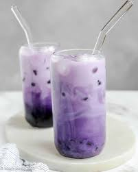

Taro Boba Tea

Taro boba tea is a popular beverage that combines the unique flavor of taro root with the delightful chewiness of boba pearls. The base of the drink is often a sweet taro-flavored milk tea, made by blending taro root with milk or non-dairy alternatives. Tapioca pearls, also known as boba, are added to the bottom of the cup, creating a satisfying chewy texture. The drink is usually sweetened with sugar or syrup, and ice is added for a refreshing touch. Taro boba tea is known for its distinctive purple color, rich taro taste, and the enjoyable experience of sipping through a straw and encountering the boba pearls.
Ingredients
- Taro Powder
- Milk or non dairy alternative
- Tapioca Pearls
- Sweetner
- Ice
Steps
- Prepare Tapioca Pearls (Boba): Cook tapioca pearls according to the package instructions. Usually, they are boiled until they become chewy, then cooled.
- Milk Tea Base
- Mix taro powder or taro flavoring with hot water to create a taro concentrate.
- In a separate container, heat milk or a non-dairy alternative.
- Combine Taro Concentrate with Milk:
Mix the taro concentrate with the heated milk, adjusting the ratio based on taste preferences.
- Add Sweetener:
Sweeten the taro milk tea with sugar or syrup, adjusting to your desired level of sweetness.
- Prepare Taro Boba Tea:
Place the cooked and cooled tapioca pearls at the bottom of a glass or cup.
- Pour Taro Milk Tea Over Boba:
Pour the taro milk tea over the tapioca pearls.
- Add Ice:
Add ice cubes to the drink for a refreshing touch.
- Stir and Serve:
Stir the drink to combine the flavors, and use a wide straw to enjoy the taro boba tea along with the chewy tapioca pearls.
Back Home